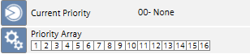
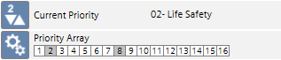
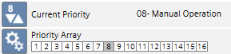
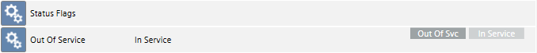
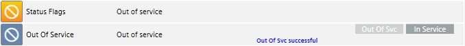

Operator Task for Desigo Automation
The behavior or impact in the system differs depending on the template. With operator task, you can limit in time system-relevant changes for maintenance work. This ensures that changes are reset to automatic mode after a set duration. The application program can be reset manually to automatic mode or automatically via the set time.

NOTE:
Automatic reset of the selected values is based on the present time on the automation station and not the time as displayed on the computer.
Command BACnet Output
The operator task may only overwrite an output if there is no priority between 1 and 7 pending on the priority array. The value on an active operator task is written at priority 8. As a consequence, only priorities between 9 and 16 can be influenced. Manual changes at priority 8 can, however, influence the operator task.
Priority array | Can operator task be influenced |
 | Yes |
 | No Priority 2 prevent a change of value. |
 | Yes A change of value at priority does, however, influence the present value. |
Default settings of the template in use | ||
Restore | Duration | Validation |
Manual | 00:30:00 | Yes (cannot be edited). |
Switch Out of Service BACnet Input
Using the operator task ensures that the objects are once again returned to service at the end of the maintenance work. The plant operates in automatic mode once the operator tasks in completed.
Alarm Suppression | |
Operational |  |
Out of service |  |
Default settings of the template in use | ||
Restore | Duration | Validation |
Manual | 00:30:00 | Yes (cannot be edited). |
Deactivate / Activate BACnet Alarm
BACnet alarms to the management station are suppressed while the operator task is active. On an active operator task, the property Enable alarm is set to No.
Object in alarm state | ||||
Property | Operator task not active | Operator task active | ||
Alarm state | Present Value | Normal | ||
State flag | In alarm | - | ||
Enable alarm |
| Yes | No | |

Default settings of the template in use | ||
Restore | Duration | Validation |
Automatic | 00:30:00 | Yes (cannot be edited). |
Deactivate / Activate Offline Trend
No further trend data is recorded while the operator task is active.
Property | Operator task not active | Operator task active | ||
Logging activated | Active | Inactive | ||
Log state | Recording | Stopped | ||
Default settings of the template in use | ||
Restore | Duration | Validation |
Automatic | 00:30:00 | Yes (cannot be edited). |
Suppress Alarms (Global Template)
If alarm suppression is activated by the operator task for an object, alarms relating to the tasks are not displayed on the management station. This includes all follow-on events for such an event, including Reactions, Notifications, etc., which are suppressed on the management station. Conversely, changes of value and state of the objects in question continue to be updated and continuously logged. Background information is available in the section Handling Alarm Suppression for System Objects.
Alarm Suppression | |
Off | |
On | |
Default settings of the template in use | ||
Restore | Duration | Validation |
Automatic | 00:30:00 | Yes (cannot be edited). |
The object (disable) or the partial structure (disable all) can be manually disabled at any time. Display in the summary bar display the new number of alarms that have alarm suppression .